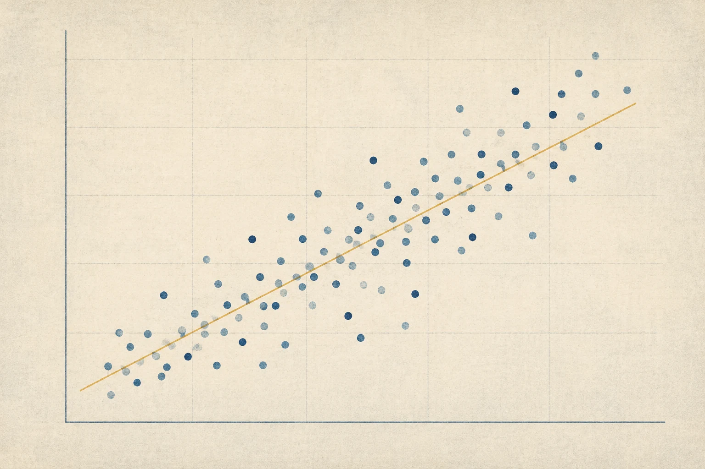
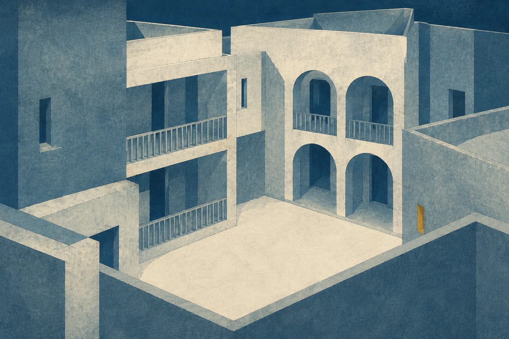

18 artes · 2 heroes, 2 banners, 2 cards e 12 variações temáticas para insights.
Clique nas imagens para abrir o WebP. Gráficos ilustrativos, sem dados observados.
1774 × 887 · 201 KB
1774 × 887 · 150 KB
2172 × 724 · 210 KB
1774 × 887 · 247 KB

1536 × 1024 · 170 KB
1536 × 1024 · 308 KB
1536 × 1024 · 232 KB
1536 × 1024 · 364 KB
1536 × 1024 · 311 KB
1536 × 1024 · 316 KB
1536 × 1024 · 257 KB
1536 × 1024 · 281 KB

1536 × 1024 · 332 KB
1536 × 1024 · 269 KB
1536 × 1024 · 449 KB
1536 × 1024 · 370 KB
1536 × 1024 · 154 KB
1536 × 1024 · 143 KB